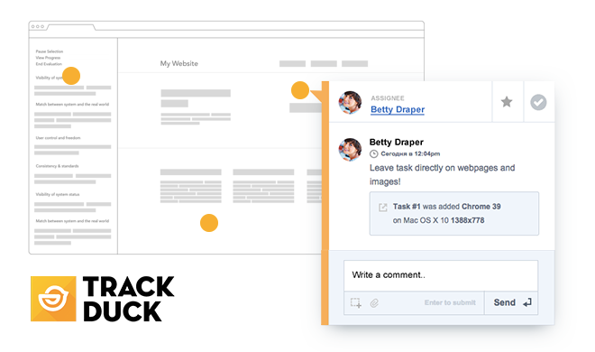

Heat map of Web users’ viewing time distribution across websites
With this bookmarklet you can put a heat map, which reveals how the average Web user distributes their viewing time across websites, on every website. It’s useful for web project managers and designers who are starting a landing page and deciding its layout.
How it works
Install bookmarklet into your browser; launch it on any page, image or mock-up of your next landing page (you can upload images with TrackDuck)

Installation
Drag'n'drop this link to bookmarks bar
or create new bookmarklet with following code:
Or check-out our demo page
Authors and Contributors
The bookmarklet is developed and maintained by the TrackDuck team. However, if you would like to contribute – tweet us at @trackduck
Support and credits
If you have any questions/comments/recommendations drop us a line to: hello@trackduck.com
Created and maintained for you by TrackDuck - visual feedback and bug tracking with screenshots for web integrated with more than 15 project management systems
